Design Rules for 3D Printing
A 3D printer builds a part from the bottom up, one thin layer at a time, and every layer has to sit on something: the layer below it, or the bed. It can't print on air. Almost every rule on this page comes back to that one fact.
Check your design against these rules before it goes anywhere near a printer. The first five answer "Will it print?" The next three answer "Will it work?" The last three are for when you send the job.
Will It Print?
1. Walls: At Least 2 Perimeters
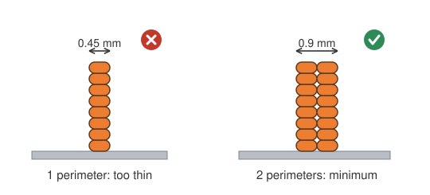
- Make every wall at least 0.9 mm thick, which is 2 perimeters.
- Use 3 perimeters (1.35 mm) where the part needs to be strong.
- A perimeter is one line of plastic around the outside of a layer, about 0.45 mm wide on our printers. A wall thinner than two of them prints weak, or the slicer skips it entirely.
Check it in Fusion: Section Analysis to see the wall, then Measure its thickness.
2. Overhangs: No More Than 45°
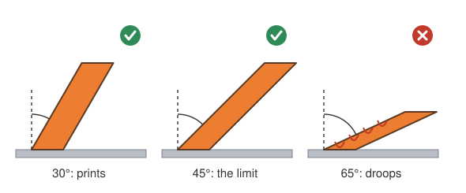
- An overhang is any surface that faces down with nothing under it.
- Up to 45° from vertical prints fine, because each layer rests mostly on the one below.
- Past 45°, the layers droop, and the part needs supports.
Check it in Fusion: Draft Analysis with the direction set to the Z axis turns every downward face blue. Measure the angle of the ones that tilt.
3. Bridges: No Longer Than 10 mm
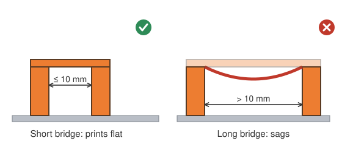
- A bridge is a flat span across a gap, supported at both ends.
- Up to 10 mm prints flat. Longer bridges sag.
- If a gap is long in one direction and short in the other, turn the part so it bridges the short way.
Check it in Fusion: a flat blue face in Draft Analysis, then Measure the gap.
4. Edges: Fillet Vertical, Chamfer Horizontal
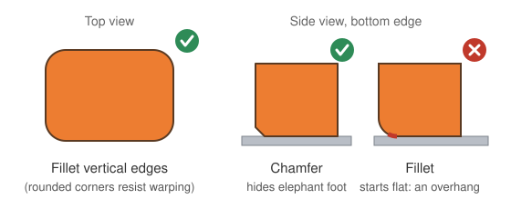
- Fillet the vertical edges. Rounded corners help the part resist warping and lifting off the bed.
- Chamfer the horizontal edges, especially where the part meets the bed. A small chamfer hides the slight bulge of the first layers (elephant foot).
- A fillet on a bottom edge starts out flat, which makes it an overhang.
Check it in Fusion: a fillet along a bottom edge shows up as a blue strip in Draft Analysis.
5. Bed Contact: Biggest Flat Face Down
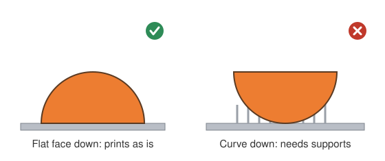
- Put the largest flat face on the bed.
- Choose the direction that needs the fewest supports. Supports waste plastic, add print time, and leave scars where they're broken off.
- If no direction works, split the part (see rule 8).
Check it in Fusion: every blue face in Draft Analysis should either sit on the bed or pass rules 2 and 3.
Will It Work?
6. Strength: Strong Along the Layers, Weak Across Them
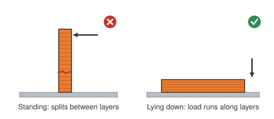
- A print is strong along its layers (X and Y) and weak across them (Z). Two layers peel apart far more easily than a single layer snaps.
- Point the load along the layers. A pin, hook, or clip that will be pushed sideways should usually print lying down.
Check it in Fusion: no tool for this one. Ask which way the part gets pushed, then look at which way it sits on the bed.
7. Fits: Leave a Gap
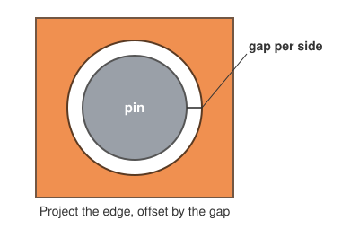
- Parts that fit together need a gap per side: the space between the pin and the wall of its hole, all the way around.
- Draw it by projecting the edge of the mating part and offsetting it by the gap:
| Fit | Gap per side | Use it when the parts… |
|---|---|---|
| Press | 0.1 mm | are pushed together once and stay put |
| Close | 0.2 mm | go together by hand and don't move |
| Free | 0.3 mm | turn or slide against each other |
- Pins must be at least 3 mm across. Thinner ones bend or snap.
- The numbers already allow for holes printing slightly small. Holes that run sideways have one more problem: their tops droop. A teardrop shape fixes it.
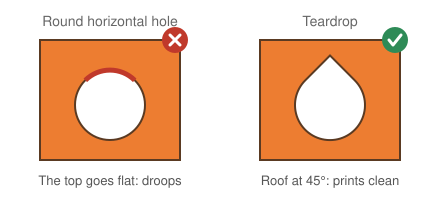
Check it in Fusion: click the curved face of a hole or pin with Measure to read its diameter. The gap per side is (hole − pin) ÷ 2. Interference finds parts that overlap.
8. One Piece, One Part Design
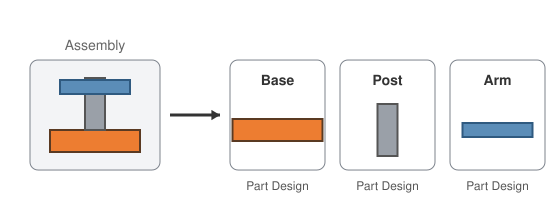
- Every piece that prints separately gets its own Fusion Part Design. An assembly puts them together.
- Splitting a part lets you orient each piece its own best way (rule 5), and a failed print costs you one piece instead of all of them.
Check it in Fusion: your project folder holds one Part Design per printed piece, with the assembly beside them.
At the Printer
These are set in PrusaSlicer, not in Fusion, but they affect how you design.
Perimeters, Not Infill, Make It Strong
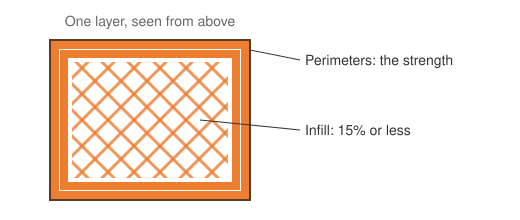
- Most of a part's strength comes from its perimeters. Infill is the pattern that fills the inside.
- Use 15% infill or less unless you have a good reason. For a stronger part, add perimeters instead.
Send Pieces as Separate Jobs
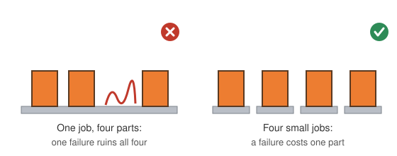
- One failed piece on a crowded print bed ruins the whole job.
- Send many small jobs rather than one big one.
Stay Inside the Limits
- Our printers are shared. Each job gets no more than 2 hours and no more than 50 g of filament.
- The slicer tells you both before you print. In Fusion, the part's mass gives you an early warning; see Find the Mass of a Part. A solid part weighs more than its print will, so a part that's already under 50 g in Fusion is safe.
Sources
- Ultimate Guide: How to Design for 3D Printing, Wikifactory
- Design Rules, Hydra Research
- Design for 3D-Printing, Rahix
- Modeling with 3D Printing in Mind, Prusa Knowledge Base